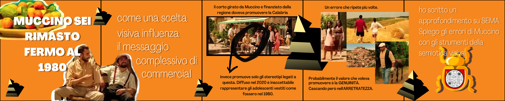

PROGETTO SEMA
ABSTRACT
La semiotica spiegata ai bambini. Sito scritto da studente per studenti. I problemi della semiotica sono: il semiotichese, la moltitudine di teorie, tra cui è difficile orientarsi e l’apparente noia che sembra provocare. Come superman, sono qui per: tradurre in parole comprensibili il semiotichese e condividere gli schemi che mi hanno aiutato ad orientarmi nel mare magnum di questa materia. Se sei uno studente che trova la semiotica un pacco insopportabile questo è il posto che fa per te! Ah, perché proprio “SEMA”? Perché il sema è l’unità minima di significato. Come per il cm, il bit etc.BENCHMARKING
OBBIETTIVI
La semiotica sembra una materia per pochi eletti.I suoi problemi sono tre:
- 1. Il SEMIOTICHESE: il linguaggio tecnico di cui si avvale. Terminologia astrusa per spiegare concetti piuttosto semplici, talmente semplici che ognuno di noi utilizza nel quotidiano senza rendersene conto.
- 2. Sembra una materia molto ACCADEMICA e con pochi risvolti pratici.
- 3. La MOLTITUDINE di TEORIE che crea confusione e fa perdere il filo logico a chi, in prima battuta, cerca di orientarsi in questo mondo.
- 1. Abbattere l’ OSTACOLO del linguaggio complesso.
- 2. SFATARE questo MITO e dimostrare che la semiotica è un metodo di analisi, un punto di vista, una serie di strumenti che possono essere applicati per analizzare anche lo scontrino della spesa. Ma soprattutto, la semiotica è divertente!
- 3. Condividere il FILO LOGICO che mi ha aiutato a orientarmi nel mondo della semiotica con chi fa fatica a rintracciarlo.
TARGET
Studiando le possibilità del "mercato" le personas che posso raggiungere sono: studenti e persone in cerca di una base di semiotica.COMPETITORS
Purtroppo, ad oggi, non esistono siti in attività con le mie stesse finalità. Esistono tanti siti che utilizzano la semiotica per analizzare ciò che li circonda ma non utilizzano un approccio didattico e, di conseguenza, il loro target non è “principianti di semiotica” ma parlano a chi già ha una base solida dei principali concetti.Due siti simili al mio per approccio sono:
SemioBO: creato da studenti per studenti. Applicano il metodo semiotico in diversi ambiti. Secondo me, la pecca è che non si capisce bene quando usino la semiotica. A chi non ha confidenza con i concetti sembra un normalissimo articolo scritto da persone preparate. Trovo la struttura del sito un po' dispersiva. Dal punto di vista estetico è un blog come tanti altri.
DIS.AMB.IGUANDO: blog personale di una docente di semiotica. Gli obbiettivi sono diversi dai miei: è un diario condiviso sul web. Giovanna Cosenza condivide pezzi della sua vita da docente e giornalista e, ogni tanto, utilizza le sue conoscenze per analizzare avvenimenti che fanno scalpore (soprattutto temi sociali e politici). Anche qui, questa tipologia di articoli non è utile ai principianti e dal punto di vista estetico non è un blog che ricordi per stravaganza (anche un po' disordinato).
Un content-creator simile per approccio ma diverso per tematiche è:
GEOPOP: spiega argomenti complessi e spinosi con un linguaggio quotidiano, il sito è intuitivo, minimal e graficamente accattivante
ARCHITETTURA E LAYOUT DEL SITO

Da qui anche la palette utilizzata: arancione vivido, nero, bianco.
Gli elementi grafici sono stati realizzati da grapich design, rispetto il tema principale.
Altri strumenti utilizzati per la costruzione del sito sono:
- Bootstrap
- Github
- Google font
- Freepik: galleria icone e elementi grafici
- Figma: creazione wireframe
COME HO DECISO DI COMUNICARE SUL WEB
- ✓ Tradurre in parole di uso comune le teorie della semiotica, in modo da risultare comprensibili anche ai bambini.
- ✓ Dimostrare attraverso analisi del quotidiano (eventi sociali, politici, adv in tv, insomma argomenti di cui si parla ogni giorno tra amici) che la semiotica può essere divertente.
- ✓ Condivisione delle mappe mentali e degli schemi che mi hanno aiutato a mettere ordine nel mare magnum della semiotica. Condivisione delle scalette di analisi e della mia metodologia di analisi.
TARGET
A chi si rivolge il sito?In generale, a tutti coloro che vogliono approcciare al mondo della semiotica e hanno una base di conoscenze debole o comunque inesistente.
Nel particolare, a tutti gli studenti che stanno studiando semiotica: a chi non comprende bene un concetto perché spiegato in maniera complicata, a chi ha bisogno di ripetere una teoria, a chi ha bisogno di conferme o a chi vuole mettersi in discussione.
COME ARRIVARE AL PUBBLICO?
Sfrutterò Instagram e il successo dei suoi caroselli. Belli e accattivanti, e dalla condivisione facile. Alcuni degli articoli avranno carattere sociale, tematiche che spesso portano alla riflessione. Il punto di forza dei caroselli è il time on page; l'utente trascorre più tempo sul tuo post, di conseguenza, comparirai più spesso nella sua home.Di seguito degli esempi:

Oltre instagram, punterò sui gruppi whatsapp universitari e all’antichissimo, ma efficacissimo, metodo del passaparola.